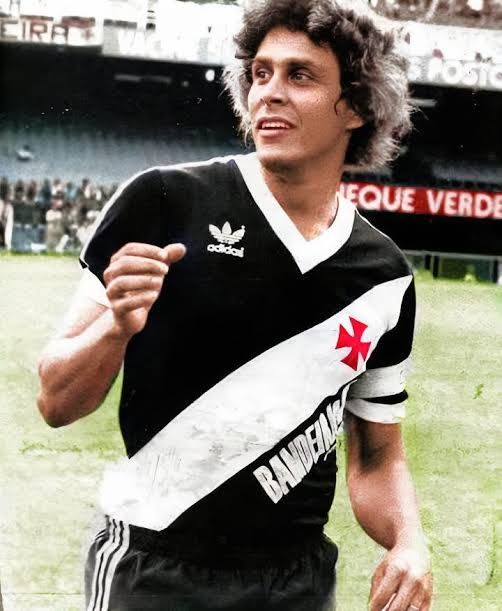

Roberto Dinamite, nome pelo qual ficou conhecido Carlos Roberto de Oliveira, é considerado o maior ídolo da história do Vasco da Gama. Revelado pelo clube, estreou como profissional ainda jovem e rapidamente conquistou a torcida com sua força, técnica e faro de gol, tornando-se uma das maiores referências do futebol brasileiro.
Ao longo de sua trajetória, Roberto Dinamite se tornou o maior artilheiro da história do Vasco e também um dos maiores goleadores do Campeonato Brasileiro. Pelo clube, conquistou títulos importantes, marcou gols históricos e construiu uma relação eterna com a torcida vascaína, sendo lembrado como símbolo de dedicação, talento e amor à camisa cruzmaltina.
